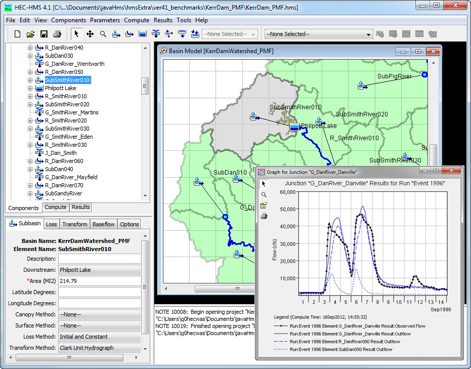
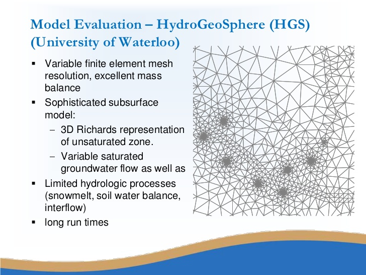

2/27/2019 Notes¶
Reviewed problem 8 homework.
Get the precip value, although he's not requiring us.
Models¶
Generally, going to be concerned with computer models. Not physical models. Many types of computer models in the hydrologic space. Like “rainfall-runoff” models.
Common Models:
He's now referencing the handout... add in handout later.
Making the point that our models are never 100% physical models.
Rational Method¶
Pretty simple model. Formula is:
\(Q_{p} = CiA\)
- where:
- \(Q_{p}\) is Peak Flow
- \(C\) is the runoff coefficient
- \(i\) is rainfall intensity
- \(A\) is the drainage area
HEC HMS¶
HSPF¶
Comparison¶
| Hydrologic Model | Laws and Approximations | Equations | Parameters | Time | Computation |
| Rational Method | Emperical | Stat | Lump | – | Analytical |
| HEC-HMS | Both EMP/Concept | Det | Lump/Semi-Dist | Event | Numerical |
| HSPF | Conceptual | Det | Lump/Semi-Dist | Continuous | Numerical |
| HGS | Most Physical | Det | Distributed | Both | Numerical |